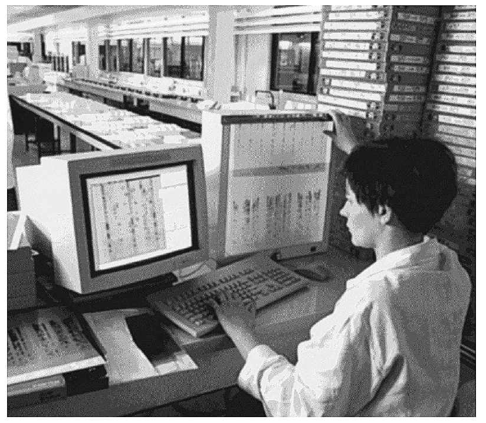

第二次世界大战所引起的若干技术突破如此重大，意义如此深远，以致值得将其归类为第二次工业革命。
实例：核能。第一次工业革命创造了蒸汽动力、电和汽油发动机这类新能源。第二次世界大战期间，新墨西哥州沙漠地带的一声爆炸标志了对原子动力的驯服。这一动力首先运用在军事方面，即将原子弹投在广岛和长崎。今天，原子动力已被用于其他许多目的，如核动力船、生物医学研究、医学诊断和治疗以及核动力厂。
实例：取代劳力的机器。第一次工业革命创造了节省劳力的机器，第二次工业革命则正在创造取代劳力的机器。这些新机器的根源可以追溯到英国在第二次世界大战期间所使用的防空炮台，这些炮台里装满了计算机——将电子存储器和命令机器处理所存数据的程序结合在一起的装置。采用了微导体即硅片之后，计算机现大大变小、变快。它们现已成为现代经济的支柱，并被广泛应用于发电厂、营业所、超级市场的收银台、纺织厂、电话转换系统和工厂的生产线。计算机是机器人的“大脑”，今天，这些机器人被用来从事焊接、油漆、搬运物资等工作，明天，它们还将被用来做家务。
实例：航天科学。当德国人用他们的V-2型火箭轰炸伦敦时，他们是在使用几年后导致航天时代的武器。1957年10月4日，苏联人把人造卫星1号发射到环绕地球的轨道上。人类第一次冲破重力的束缚，自由自在地探测宇宙空间。还没有人能够准确地预见这将会产生什么样的影响。由于缺乏重力和无限制地提供真空、超高温和超低温，宇宙空间为制造商提供了许多有利条件。因此，有些计划现已在进行中，其目的是为了建造自动化的太空制药厂，以生产各种疫苗和适于各种酶的纯组织培养；建造某些自动化的太空工厂，以创造用于种种电子线路的几近完美的晶体；建造巨大的太阳能收集器，以承载通过微波从太阳到地球站的能量。更为先进的是诸如美国物理学家杰拉德·K. 奥尼尔和苏联天体物理学家约瑟夫·S. 什克洛夫斯基等科学家的思考，他们预测人类将在宇宙空间建造巨大的平台或岛屿，在那里生活的人最终也许将比在地球上生活的人还要多。
实例：基因工程。1953年，科学家们发现了DNA（脱氧核糖核酸）这种携带各种生物遗传密码的化学物质的结构。自从学会如何通过DNA阅读基因信息以来，科学家们还学会了如何通过切开和拼接基因、通过使动物和人的基因在细菌体内增殖，甚至通过在试管里制造全新的人造基因，来编写他们自己的基因信息。因而，科学家如今能够阅读基因密码，修改基因密码，并创造出新的基因密码。人类从大约1万年前开始驯化动植物起，就一直在干预基因。但现在，这种干预是直接和瞬时的。科学家们现在不是在动植物中观察许多代后作出选择，而是在一个个单独的基因中选择，并操控它们。这种基因工程为新的农业革命提供了种种可能性。在医学领域，基因工程已创造出胰岛素、生长激素以及若干种新的疫苗，其中包括一种能防止具有高度传染性的牛口蹄疫。
实例：信息革命。这场革命包括两部分——积累信息和传播信息。今天，知识积累的速度是空前和爆炸性的。仅世界各地每24小时公布的科学信息，其量之多，即可填满7套24卷一套的《不列颠百科全书》。同样空前和爆炸性的是用计算机储存和检索信息的速度，还有以光速——尤其是通过卫星——向全世界发送信息的速度。任何国家中的任何人都能通过报纸、杂志、收音机、电视机或计算机得到这种信息。
实例：新的农业革命。伴随第一次工业革命而来的是农业革命，以圈地、经过改良的种子、科学化的畜牧业，以及新的农业机械为特征（第二十七章第四节）。伴随第二次工业革命而来的也是农业革命（“绿色革命”），这场农业革命是由第二次世界大战期间农产品的需求量和价格的急遽上升而引起的。主要谷类植物的各种新杂交品种连同灌溉、肥料和农药一起，大大增加了作物产量。到20世纪90年代，由于基因工程的发展，继第一次“绿色革命”之后发生了第二次“绿色革命”，在这场革命中，科学家将取自不同生物的基因材料加以混合、配对。这一技术不仅带来诸如人胰岛素和干扰素这类有用物质，它如今也正被应用于农业，由此带来的植物能在盐性或干燥的土壤中生长；能够制造它们自己的氮肥；不易受由病毒、细菌、真菌和蠕虫引起的各种病害的影响；产量更大，营养价值也更高。这就是自第二次世界大战以来第三世界粮食产量的增长速度高于人口增长速度的一个原因。
第一次工业革命不仅对它的发源地——欧洲大陆——有深远的影响，对世界其余地区也有深远的影响。现在，第二次工业革命的情况也是如此。但是，由于这场革命要强有力得多，它对世界各地的影响也相应更具破坏性和覆盖性。

图297 科学家们正在越来越多地了解促使严重疾病最终生成的基因因子。如果有机会的话，你愿意做一次能预测你自己远期健康状况的基因检查吗？